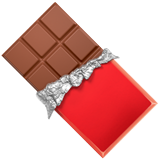

Salut moi c'est Agathe 😎 

Je travaille dans le secteur de l'agroalimentaire, friande des produits plaisirs, je participe à continuer de faire briller la powerbrand de chez Ferrrero : NUTELLA !
Découvre le site de Nutella® FrancePourquoi j'ai choisi l'agroalimentaire ?
L'industrie alimentaire se développe à un rythme rapide sur le marché actuel et est au coeur des grands défis de l'époque. Ce secteur est au coeur de nombreux déats de société comme l'environnement, la santé ou le rapport aux animaux. C'est pour cela que je trouve ce secteur porteur de sens de part sa fonction essentielle et son omniprésence dans notre quotidien. Enfin, face à la crise, le secteur agroalimentaire se caractérise par une bonne résistance.
Ferrero
Ferrero est une entrerpise agroalimentaire italienne, créée en 1946 par Pietro Ferrero à Alba en Italie, spécialisée dans la confiserie industrielle et connue pour des produits phares tels que Nutella, Kinder, Ferrero Rocher, Mon Chéri et Tic Tac.
Nutella®
Nutella® est une célèbre marque de pâte à tartiner aux noisettes et fèves de cacao. Ce produit est vendu dans des pots pouvant être personnalisés. Leader sur le marché de la pâte à tartiner, la marque représente plus de 80% du marché à elle toute seule.
Suivez les actualités de Nutella®